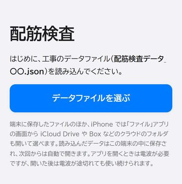
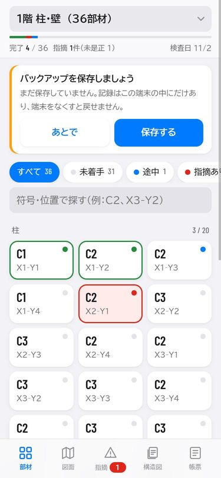
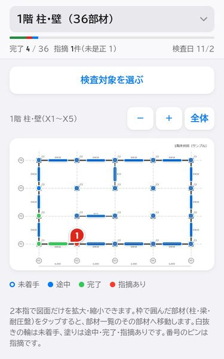
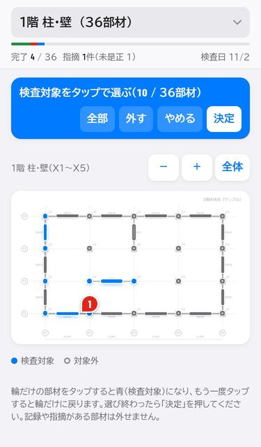
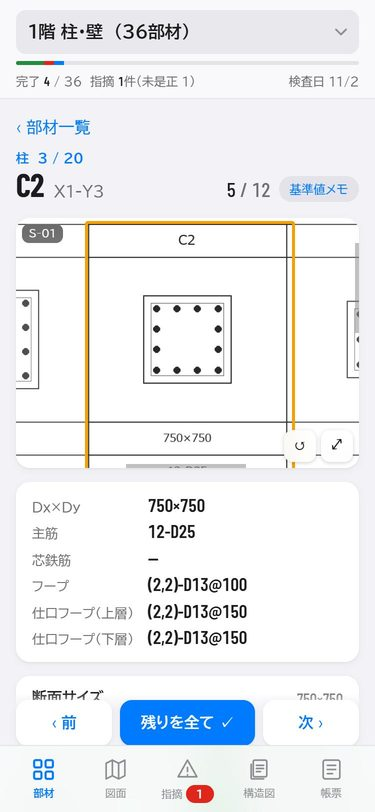
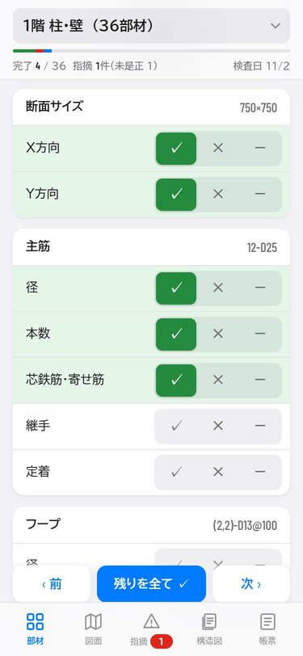
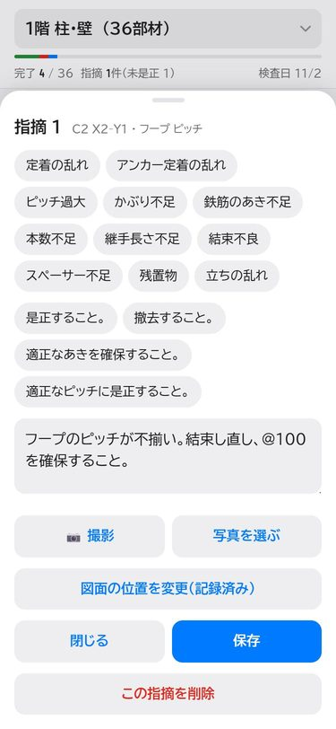
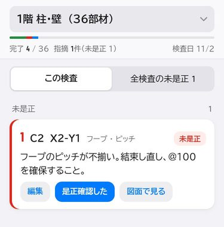
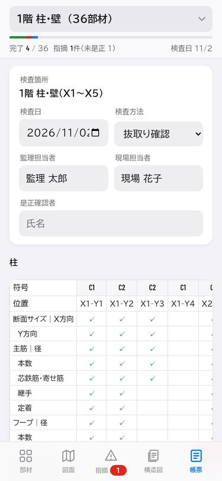
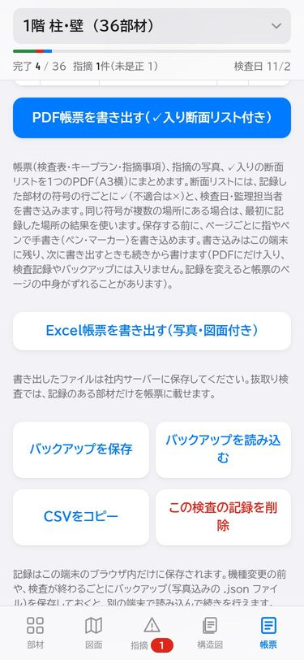

配筋検査アプリ 操作マニュアル
監理者（構造）の配筋検査を、紙の検査表の代わりにスマートフォン・iPad で行うアプリです。インストールは不要で、ブラウザで開いて使います。
画面の写真は説明用の架空の物件（サンプル工事）です。
1. はじめに（最初の1回だけ）
準備は4つです。2回目からは、ホーム画面のアイコンを押すだけで前回の続きから使えます。
- アプリを開く：iPhone は Safari で https://s0645y5-png.github.io/haikin-kensa/ を開きます。
- ホーム画面に追加する：Safari の共有ボタン →「ホーム画面に追加」。以後はアイコンから開きます。開いた後は電波が途切れても使えます。
- データファイルを読み込む：担当者から Box などで受け取った「配筋検査データ_〇〇.json」を、最初の画面の「データファイルを選ぶ」で選びます。検査箇所・部材・設計値・図面が入ります。
- 構造図ファイルを読み込む（必要な人だけ）：「構造図」タブの「構造図ファイルを選ぶ」で「配筋検査_構造図_〇〇.json」を選ぶと、構造図一式を見られます。

データファイルが新しくなったときは、帳票タブの一番下「新しいデータファイルを読み込む」で入れ替えます。それまでの記録は消えません。
2. 画面の構成
画面の一番上で検査（例：1階 柱・壁）を切り替え、下の5つのタブで画面を移ります。上の帯には完了数・指摘数・検査日が出ます。
| タブ | できること |
|---|---|
| 部材 | 部材の一覧。タップで部材カード（確認項目）を開く。状態でのしぼり込み、符号・位置での検索 |
| 図面 | キープラン。部材をタップするとその部材へ移動。検査対象を選ぶ |
| 指摘 | 指摘の一覧と是正確認。「全検査の未是正」でほかの検査の指摘もまとめて見る |
| 構造図 | 構造図一式の閲覧（左右スワイプでページ送り、2本指で拡大） |
| 帳票 | 検査日・担当者の入力、PDF・Excel の書き出し、バックアップ、このマニュアル |

図面タブの部材の印は、次の意味です。
| 印 | 意味 |
|---|---|
| 青い輪 | 未着手 |
| 青で塗りつぶし | 途中 |
| 緑で塗りつぶし | 完了 |
| 赤で塗りつぶし | 指摘あり |
| 灰色の細い輪 | 検査対象外 |
| 番号のピン | 指摘の場所 |

3. 検査の流れ
検査は「検査を選ぶ → 帳票の欄を入れる → 検査対象を選ぶ → 部材ごとに確認する」の順です。
- 検査を選ぶ：画面上の欄で、今日検査する箇所を選びます。
- 帳票の欄を入れる：帳票タブで検査日・検査方法（全部材確認／符号毎確認／抜取り確認）・監理担当者・現場担当者を入れます。
- 検査対象を選ぶ（抜取りのとき）：図面タブの「検査対象を選ぶ」を押し、検査する部材をタップして青にして「決定」。部材一覧・件数・帳票が、選んだ部材だけになります。選ばなければ全部材が対象です。記録のある部材は外せません。
- 部材カードで確認する：部材タブ（または図面の部材をタップ）で部材カードを開き、確認項目ごとに押します。
- ✓ 適合、× 不適合、－ 対象外（もう一度押すと取り消し）
- 「残りを全て ✓」：まだ押していない項目を全部 ✓ にする（すぐ出る「元に戻す」で取り消せる）
- 「‹ 前」「次 ›」で隣の部材へ移る

部材カードの上には、その部材の断面リスト（設計図）がオレンジの枠で出ます。2本指で拡大、右下のボタンで全画面表示です。その下に設計値が並びます。


部材カード右上の「基準値メモ」でかぶり厚さなどの基準値を、梁の「梁貫通補強要領」で梁貫通補強検討書（適用範囲と計算結果一覧表）を見られます。
4. 指摘の記録と是正確認
部材カードで × を押すと、指摘の入力画面が開きます（「＋ この部材に指摘を追加」からも開けます）。
- よく使う言葉のボタンか、文字入力で指摘内容・処理方法を書きます。
- 「📷 撮影」または「写真を選ぶ」で写真を付けます（1件に20枚まで）。写真の ✎ で、矢印や丸を書き込めます。
- 「図面に位置を記録」を押して図面をタップすると、図面に番号のピンが立ちます。
- 「保存」を押します。

是正確認：指摘タブで該当の指摘の「是正確認した」を押します。「全検査の未是正」に切り替えると、ほかの検査の未是正もまとめて確認できます。

5. 帳票の書き出し
帳票タブの下のボタンで、PDF か Excel の帳票を作ります。抜取り検査では、記録のある部材だけが帳票に載ります。
- PDF帳票を書き出す：検査表・キープラン・指摘事項・指摘写真・✓入り断面リストを、1つのPDF（A3横）にまとめます。保存する前に、ページごとに指やペンで手書きを書き足せます。最後に「PDF保存」を押します。
- Excel帳票を書き出す：検査帳票・指摘事項・写真・キープランの4つのシートを作ります。
書き出したファイルは「共有」（メール・ファイルなど）か「この端末に保存」を選んで、社内サーバーに保存してください。


6. 記録の保存とバックアップ（大切）
記録と写真は、その端末のブラウザの中だけに保存され、クラウドには送られません。端末をなくすと戻せないので、バックアップを取ってください。
- 検査が終わるごと、また機種変更の前に、帳票タブの「バックアップを保存」で .json ファイル（写真込み）を保存し、社内サーバーに置いてください。しばらく保存していないと、部材タブに案内が出ます。
- 別の端末で続けるときは「バックアップを読み込む」で読み込みます。
- ブラウザのデータを消したり、ホーム画面のアイコンを削除したりすると、記録が消えることがあります。
- 検査記録・写真を、個人のクラウドやメールに置いたままにしないでください。
7. 困ったとき
| こんなとき | すること |
|---|---|
| 最初の画面から進めない | データファイルを読み込む（1 の 3） |
| 図面の部材をタップしても移動しない | その部材は検査対象外。「検査対象を選ぶ」で追加する |
| 部材が一覧に出てこない | 状態のしぼり込みを「すべて」にし、検索欄を空にする。検査対象外の部材は出ない |
| 記録を間違えて付けた | 同じボタンをもう一度押すと取り消せる |
| アプリの新しい版が届いたか知りたい | 電波のある場所で開き直し、帳票タブ一番下の版（例：2026.11.02-2）を確かめる |
| 端末を替える | 古い端末で「バックアップを保存」→ 新しい端末で「バックアップを読み込む」 |
| 設計値・図面がおかしい | アプリ担当者（監理者）に連絡する |